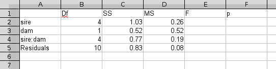

We will be working with two different topics today, nested factors and random effects. Nesting has to do with the the arrangement of treatment levels relative to each other. Random effects have to do with whether a predictor variable has been experimentally set (with levels that would be used again if the experiment was repeated), or has been sampled from a larger population (with levels that would change if the experiment were repeated). Don't lose sight of the fact that these are two different concepts, but we tend to talk about them together because nested factors are frequently also random effects.
All of the data you will use today are in this file. Download it to your computer.
Nested factors in a fixed effects analysis:
The first data set we will use gives gestation lengths among several different genera of mammals. We are interested in differences among these particular genera, and thus we will treat them as fixed effects. However, we know that genera are nested within families, and families are nested within orders, and this organization of the data leads to a lack of independence of the species included in each genus. We will test whether genera differ from one another, given this hierarchical nesting of the taxonomic levels.
1. Start a new project in a folder called "random_effects", and start a new R script for your commands. Import the sheet "mammals" from your Excel file into R Studio. Call the data set "mammals".
2. Gestation length is highly right skewed - we know that we can log transform a response variable on the fly in our model statement, but we can also log transform a column and add it as a new variable to our data set. To log transform gestation length, use the command:
mammals$ln.gestation <- log(mammals$gestation)
3. Fit a linear model with ln.gestation as the dependent variable, and with order, family, and Genus as predictors. To let R know that Genus is nested within family, and family within order, the model should look like this:
lm(ln.gestation ~ order/family/Genus,
data = mammals) -> mamm.gest.lm
4. Generate an ANOVA table for the model. Because of the hierarchical nature of the factors, it makes sense to generate a sequential table (Type I), so use the anova() command, not the Anova() command. The final level is the unexplained variance (i.e. the error term), so the order that the variables are entered will give you the effects of taxonomic Order first, then Family once Order is accounted for, then Genus once order and family are accounted for.
5. It's conceivable that the effects of taxonomic group on gestation lengths are attributable to body size. Larger animals are expected to take longer to gestate than smaller ones, and some taxa (e.g. carnivores) are larger than others (e.g. rodents). You can incorporate this possibility into your analysis by including body mass as a predictor in the model. Body mass is also strongly non-normal, so log-transform the variable, and call it ln.mass.
Fit a model that explains log gestation with log mass plus the nested effects of order/family/Genus, and call the model "mamm.gest.mass.lm". From this analysis you can see that it's possible to mix nested and non-nested variables in a model. Compare the ANOVA tables and see how accounting for mass changed the sums of squares accounted for by each taxonomic level.
Random effects models
R has a variety of tools for working with random effects models, but we will just be scratching the surface on linear mixed models today. As such we will stick to the relatively limited built-in mixed models support in the aov() command. More complicated, but much more capable, add-on packages are available, and if you want to learn more about random-effects modeling in R, the best available package is called "lme4". Linear mixed-effects modeling is the new Big Deal in ecological and evolutionary biological data analysis, but it is a complex, advanced topic that's beyond the scope of this class.
We will work with versions of the pig sires and dams data we saw in lecture. To get started, we will work with a two-way factorial ANOVA in which both sire and dam are considered random effects. Consequently, rather than considering the purpose of the analysis to be identification of the best boar for breeding purposes, we are interested in whether it is paternal effects or maternal effects that have the greatest influence on piglet weight gain. The data represent an experiment in which five different male pigs (sires A-E) are mated with one of two females (dams A or B). The weight gained by their piglets after a period of several weeks is measured (wgain). This is a modified version of the actual data set, and bear in mind it isn't very realistic to expect to do an experiment in which a single female bears piglets from five different males (and even if it's possible, the order in which they were mated to each male would become an issue, as sow age and maternal experience would become important). To keep the example simple, though, we will ignore this complication so that we can see how the models compare.
1. Import data from the sheet "pigs_rand_crossed" into a data set called "pigs.rand.crossed".
2. To fit your first model, with both sire and dam treated as random effects, type the command:
aov(wgain~sire*dam + Error(sire*dam), data=pigs.rand.crossed) -> prc.aov
The aov function is a linear modeling function, but it is specialized for analysis of variance designs. It has the ability to use random effects by specifying factors which are considered sources of random error (or "error strata"). In this case, because we are treating both sire and dam as random effects, as well as the interaction between them, we are using "Error(sire*dam)" to identify all of the terms in the model as random effects.
3. Generate the ANOVA table. Type the command:
summary(prc.aov)
and submit it. You will see that the output gives several lines, each labeled as "Error" (as in "error term", not "you blew it sucker"). There is an error term for sire ("Error: sire"), one for dam ("Error: dam"), and one for the interaction between them ("Error: sire*dam"), as well as the usual error term for variation among individual data points (called "Error: Within").
Unlike MINITAB, the package used by your book, R does not produce F tests for random effects. This appears to be due to differences of opinion among statisticians over whether significance tests are appropriate for random effects (R programmers take the position that estimates of variance components are fine, but not significance tests). Taking your book's authors' side on this one, we will need to compute the random effects p-values by hand. The easiest way to get F and p-values from the information provided by R is to calculate them in Excel, but first we have to get the output into an Excel spreadsheet. So...
4. Copy the output into an Excel spreadsheet. Select the output in R Commander, and paste it into Excel.
At first each row of output will appear in a single cell in column A, like so. We need to split these blocks of output into different cells. To do that, select all fifteen rows of output (A1 to A15), switch to the Data tab, and click on the "Test to columns" item (about the middle of the tab). The wizard that starts up will split the columns based on their positions, or based on characters that separate the numbers and labels ("delimiters") - since our data are separated by spaces, we will treat it as delimited text, so click "Next". In the next window, use "Space" as the delimiter, and click "Next". In the final window, accept all the default formatting by clicking "Finish". The result should look like this.
{kind=link}
{kind=link}
The numbers are now in separate cells, which is good, but we need to re-arrange things to look like an ANOVA table. To do that, you can do the following:
- Delete the first row (with Error: dam).
- Make sure the columns are labeled correctly. The first column of numbers are degrees of freedom (Df), the second column are sums of squares (SS), the third are mean squares (MS). The next column will be the F values we calculate, and the final column will be the p-values.
- Delete the rows separating the sire:dam term from the Residuals term. The final table should look like this:

5. Once the values are in a table, calculate the F values. Remember that in a random effects model, a random main effect has variability due to the main effect, the interaction, and the error term. The interaction term has variability due to the interaction and the error term, so the only difference between the main effect and the interaction term is the main effect itself; consequently, the interaction MS is the appropriate denominator for the test of main effects in this model. Assuming your table looks like the one above, to get the F for the effect of sire, select cell E2, and type in the spreadsheet equation:
=D2/D4
which gives you the ratio of the sire MS and the sire:dam MS. The F for the effect of dam goes into E3, and will be equal to:
=D3/D4
And, the F for the interaction is the interaction MS over the error MS. It will go into E4, and will be equal to:
=D4/D5
To get p-values for these F values, we will use Excel's "FDIST" function. The function takes an f-value as its first input, and the numerator and denominator degrees of freedom as its second and third inputs. To get the p-value for the sire main effect, click into cell F2 and type the function:
=FDIST(E2,B2,B4)
which uses the F-ratio for the sire main effect (E2), the degrees of freedom for the sire main effect (B2), and the degrees of freedom for the sire:dam interaction (B4), and returns the p-value for the sire random effect.
The p-value for the dam random effect would be:
=FDIST(E3,B3,B4)
The interaction p-value would be:
=FDIST(E4,B4,B5)
Mixed fixed and random effects model, with one nested factor.
The actual pigs data set is different from the one we just analyzed. Sires are considered fixed effects, because we're interested in the the particular sires (the farmers want to identify the best ones for breeding purposes, so sires are not simply random picks from a population of possible sires). Because a single sire can inseminate many sows, and not just the ones used in this study, dam is considered a random effect. Furthermore, a single dam can only be used with each sire once, which means that dam is nested within sire. Two piglets from each dam's litter are randomly selected to measure growth, and there are thus two measures of growth per dam.
1. Import the data in sheet "pigs" into a data set called "pigs".
2. Fit a model with sires as the main effect, and with dams as the random effect. This will cause the effect of sires to be tested against the dam within sires MS.
aov(growth ~ sire + Error(dam), data = pigs) -> pigs.mixed.lm
summary(pigs.mixed.lm)
3. Because sire is a fixed effect, you will get a p-value for it in the ANOVA table. You'll see that the MS for this effect is 1.0031, which is equal to the sire MS over the dam MS. The dam MS is listed in the "Residuals" line of the "Error: dam" block of output. To get the p-value for the random effect of dam, you can use Excel to calculate an F-value (dam MS/error MS), and then a p-value (using 5 degrees of freedom for the numerator and 10 for the denominator).